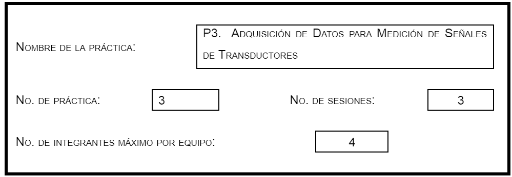
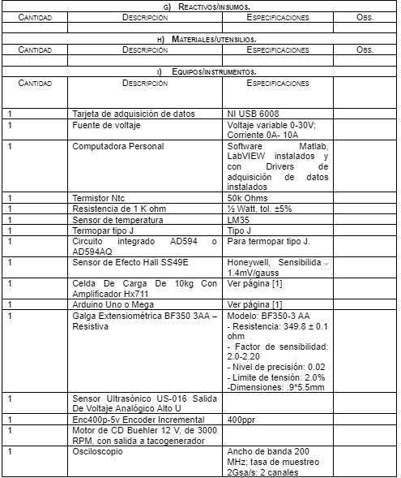
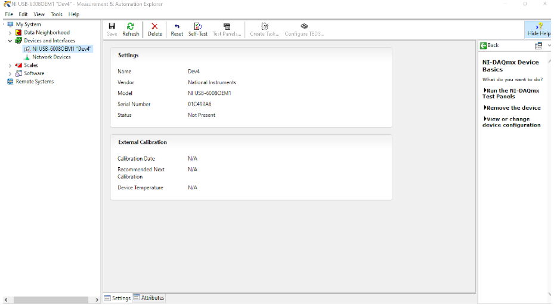
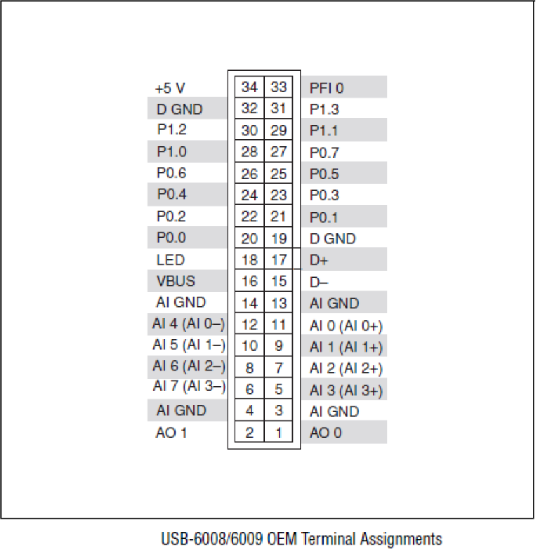
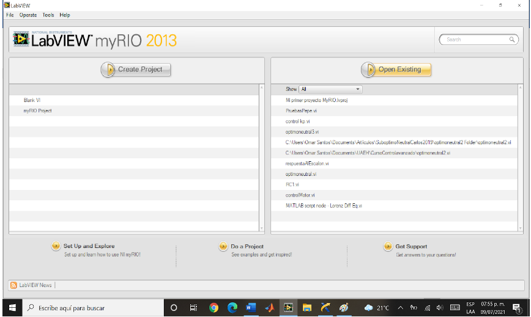
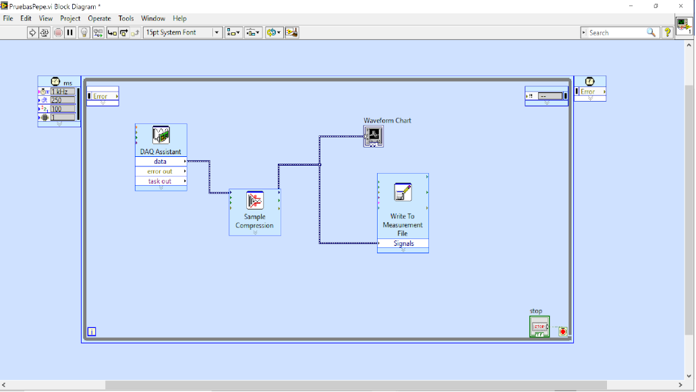
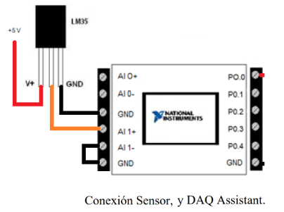
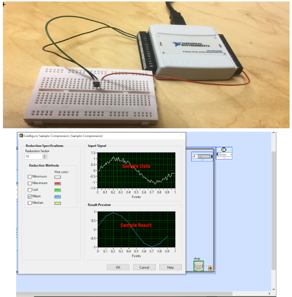
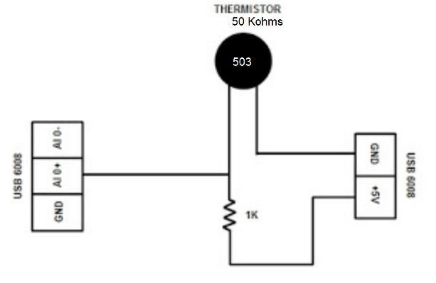

Practica 3
1.-Identificación.

2.-Introducción.
|
Instrumento tradicional. Aquel instrumento tipo hardware rígido que se puede adquirir de distintos fabricantes y cuya funcionalidad viene definida por estos últimos. Instrumento Virtual. Toda computadora en la cual se ha insertado o conectado, interna o externamente un dispositivo de Adquisición de datos rodeado de un software lo suficientemente poderoso y flexible como para sacar el máximo provecho de ese hardware. Así, estos dos tipos de instrumentación Placa o módulo de Adquisición de datos. Hardware un amplificador y acondicionador de señal eléctrica, conversores Analógico a Digital, Digital Analógico, bornes de conexión para señal eléctrica y un puerto de conexión al Bus de datos de la Computadora.
Componentes de un Sistema de Adquisición de datos. 1) Computadora o computadora personal (PC). El cual lleva a cabo todo el procesamiento de información, la cual una vez adquirida puede ser exhibida en tiempo real, guardada en un formato de intercambio en un archivo, transmitida a través de una LAN (Local Area NetWork) o través de Internet. La información adquirida puede ser analizada ejecutando en la computadora algún cálculo complejo previo: escalamiento, filtrado, integración, diferenciación, estadística, alguna transformación matemática, etc. 2) Software de adquisición. Este elemento corresponde al lenguaje a usar en el cual se programará el configurará el programa que realizará la funcionalidad deseada por el sistema de adquisición de datos. Como mínimo se tienen dos niveles: un driver o software de bajo nivel que comunica la tarjeta con el sistema operativo de la computadora y un lenguaje de desarrollo generalmente gráfico o utilitario o de alto nivel, donde se configurará o programará la aplicación final con la que interactuará el operador al hacer los ensayos y mediciones. 3) Bus de conexión o puerto de conexión. Tiene por misión conectar la computadora con el adquisidor de datos. Puede ser bus PCI, PCMCIA, puerto serial, paralelo, USB, GPIB, etc. 4) Adquisidor de datos. Toma los datos del acondicionador y hace la conversión análoga digital de la información. Puede ser un elemento interno o externo de la computadora. El enlace entre la computadora y el adquisidor no tiene que ser permanente. 5) Acondicionador de señal. Tiene la función de adaptar la señal que se recibe del sensor, amplificándola, linealizándola, filtrándola, etc. 6) Transductor. Es el que convierte un parámetro físico, como temperatura, presión, fuerza, luz, desplazamiento, etc. en un fenómeno eléctrico, neumático, etc., capaz de ser medido o mensurado. Software LabVIEW. LabVIEW es un software de ingeniería de sistemas para aplicaciones que requieren pruebas, medidas y control con acceso rápido a hardware e información de datos. Cada programa realizado en LabVIEW recibe la denominación de VI (Virtual Instruments). Estos VI’s pueden anidarse dentro uno de otro, con lo cual el entorno es jerárquico y reusable. Un VI consta de dos áreas bien definidas: Panel frontal (Front Panel), es la que verá el usuario final cuando ejecute el programa y será la interfaz gráfica de usuario (GUI) con la cual interactuará en la aplicación final. Por otro lado, el Diagrama a Bloques (Block Diagram), que es el área de programación, donde se van colocando las funciones representadas por objetos gráficos y se cablean entre sí, a los efectos de desarrollar la lógica y la secuencia de programación deseada.
|

3.-Objetivo General.
| El alumno será capaz de realizar mediciones de sensores de temperatura, magnéticos, de tensión, presión, desplazamiento y rotación, mediante el uso de instrumentación tradicional e instrumentación virtual, para poder realizar la caracterización de los distintos sensores y almacenar y desplegar los datos adquiridos. |
4.- Objetivos Específicos.
|
5.- Reactivos/insumos, materiales/utensilios y equipos.

6.-Desarrollo de la Actividad Práctica.
|
1 En este paso se realizará la lectura y escritura de canales analógicos de entrada y salida, respectivamente, de una tarjeta de adquisición de datos.  4. En el panel de prueba, seleccione un canal analógico de entrada y uno de salida. Seleccionar el modo RSE o Diferencial, según la medición a realizar y lo explicado por el profesor y el modo En Demanda para el muestreo. Conecte la fuente de CD a las terminales de la tarjeta, asegúrese que el voltaje seleccionado en la fuente no sea mayor de ±10 Vcd, de acuerdo con la siguiente configuración de terminales  5. Mediante un voltímetro, mida el voltaje en el canal analógico de salida seleccionado de acuerdo con la figura anterior, verificar que la medida sea la programada en el Panel de prueba del NIMAX. 6. Una vez verificado que los canales analógicos de entrada y salida funcionan normalmente, cierre el programa NIMAX. 7. Ejecutar el software LabVIEW, seleccione un Instrumento virtual en blanco (Blank VI)  8. Deberán abrirse dos ventanas: Panel frontal y Diagrama a bloques. Seleccionar en el panel frontal un graficador (Waveform Chart), cambie el nombre del graficador y en el diagrama a bloques un ciclo temporizado (Timed Loop), un Asistente de adquisición de datos (DAQ Assistant) y configure la lectura de voltaje en el mismo canal que verificó con el NIMAX. Seleccione un bloque de escritura a archivo (Write To Measurement File), seleccionando formato LVM, sin cabeceras, seleccione la ruta donde se guardará el archivo. Conecte el graficador con la salida del asistente de adquisición de datos.  9. Conectar la tarjeta con la fuente de voltaje conectada al canal analógico probado en el NIMAX. 10. Asegúrese que todos elementos estén dentro del ciclo temporizado. Configurar el tiempo de muestreo (Period). Ejecute el programa. 11. Finalmente, abrir el archivo LVM con el block de notas, copie los datos de tiempo y datos leídos en canal analógico de entrada y grafique en Matlab. En esta segunda parte de la práctica se medirán las señales eléctricas de temperatura, termistor, termopar, sensor efecto hall, celdas de carga, galgas extensiométricas, sensor ultrasónico, decodificador óptico y tacogenerador. 1.- Sensado de temperatura mediante un sensor LM35. Conectar el sensor LM35 alimentado con 5 Vcd de la siguiente manera:  2. Hacer un programa en LabVIEW que grafique la temperatura sabiendo que 10mV representan 1 grado centígrado. Además, filtre la señal con un compresor de datos.  3. Configurar el factor a un valor adecuado. Ahora conectar el termistor de 50 KOhms a una entrada analógica en serie con una resistencia de 1 KOhms como se muestra a continuación, la alimentación de 5 Vcd es proporcionada con la tarjeta.  4. Realizar un programa que despliegue la señal analógica, considerando la siguiente configuración en el asistente de adquisición de datos:
5. Después seleccionar un canal analógico de entrada y configure con los siguientes valores:
El modo de adquisición debe seleccionarse a una muestra en demanda si usted está usando un ciclo temporizado y almacene en archivo para luego graficar en Matlab. 6. De acuerdo con la ley de Kirchoff de voltaje, calcular la resistencia del termistor Rt, y de acuerdo a la fórmula de Steinhart-Hart calcule la desviación de temperatura.
9. Conectar las terminales 8-9 (+) y 7 (-) con la tarjeta de adquisición de datos y realice un programa en LabVIEW para leer y escribir a archivo los datos leídos de la salida del circuito AD594. Grafique en Matlab los datos almacenados. Realice las mismas mediciones con el osciloscopio y multímetro, y haga una tabla comparativa entre ambas mediciones. 10. En esta etapa de la práctica se medirán y almacenarán los datos obtenidos de las mediciones realizadas de un sensor de efecto Hall SS49E, de Honeywell. Este sensor de tres terminales tiene las siguientes características lineales y principio de funcionamiento:
|


7.-Cuestionario.
|
1. Observe los gráficos obtenidos de las mediciones de señal de salida de cada sensor, ¿son lineales todos?, ¿cuáles no? Argumente su respuesta. |
8.-Bibliografía
|